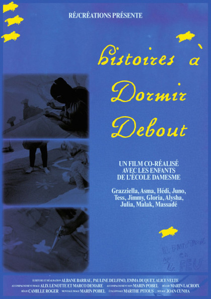
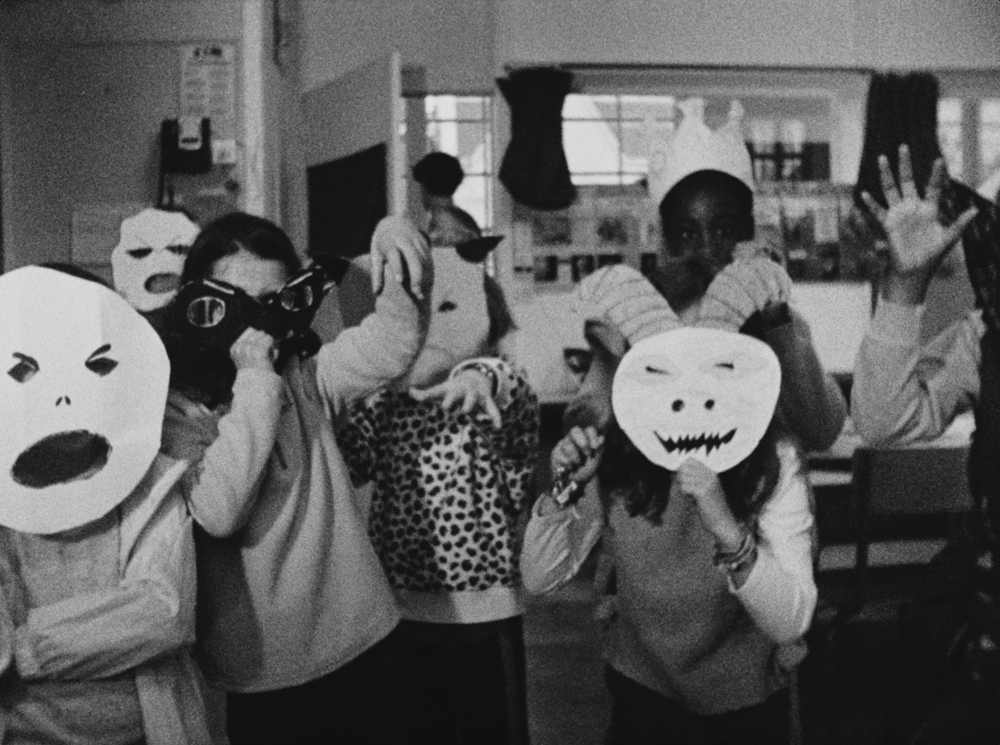
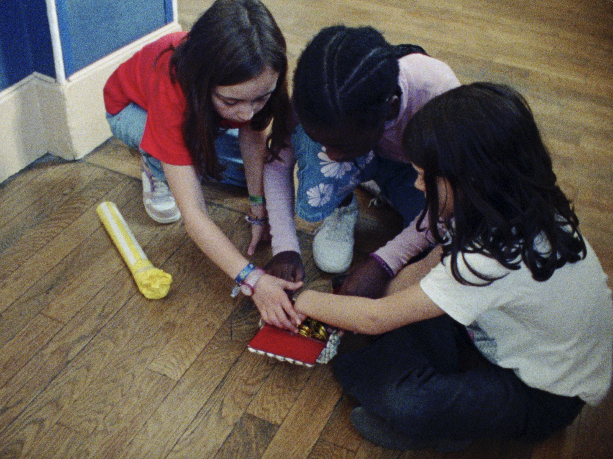
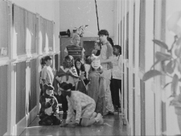
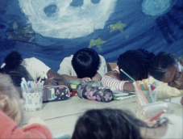

Affiche : Roméo Abergel



Réalisation : Albane Barrau, Pauline Delfino, Emma Duquet, Alice Velte
Ecriture : Albane Barrau, Pauline Delfino, Emma Duquet, Alice Velte
Son : Marin Pobel
Mixage : Joan Cunha
Etalonnage : Marthe Pitous
Production (structure) : Ré/créations
Ayant droit : Ré/créations
Synopsis : Pour parer à l’ennui d’un jour d’école, les enfants s’endorment et se retrouvent en songe, entre de grands feux et des monstres bariolés. Dans leur fuite effrénée, ils croisent la reine aux conseils avisés, qui leur redonne courage.
Le rêve est aussi fait de petites mains qui peignent, découpent, de draps qu’on soulève pour créer des décors, et de bruits qu’on souffle : le film est un travail collectif qui se montre, s’exhibe, et perce la fiction.